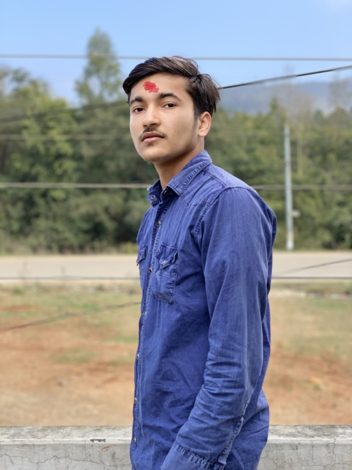
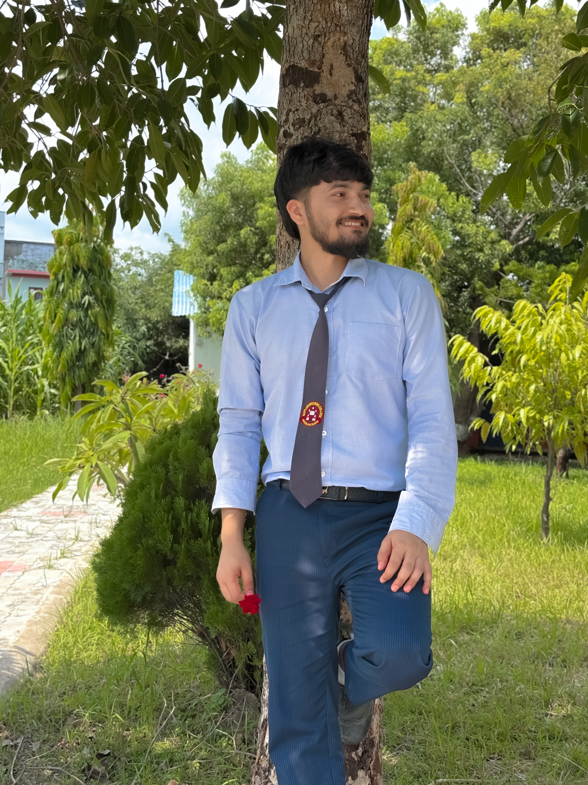
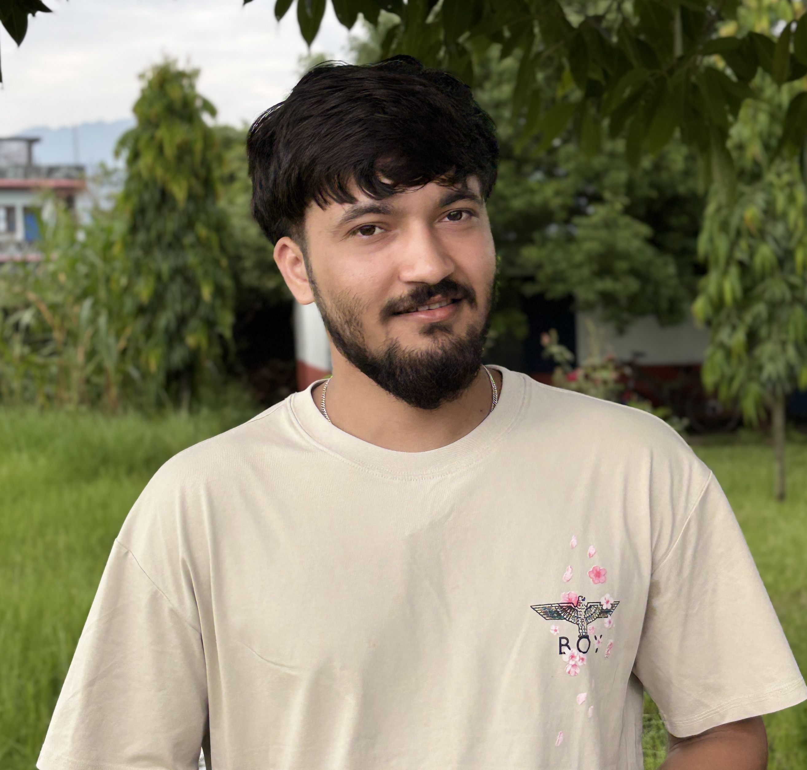
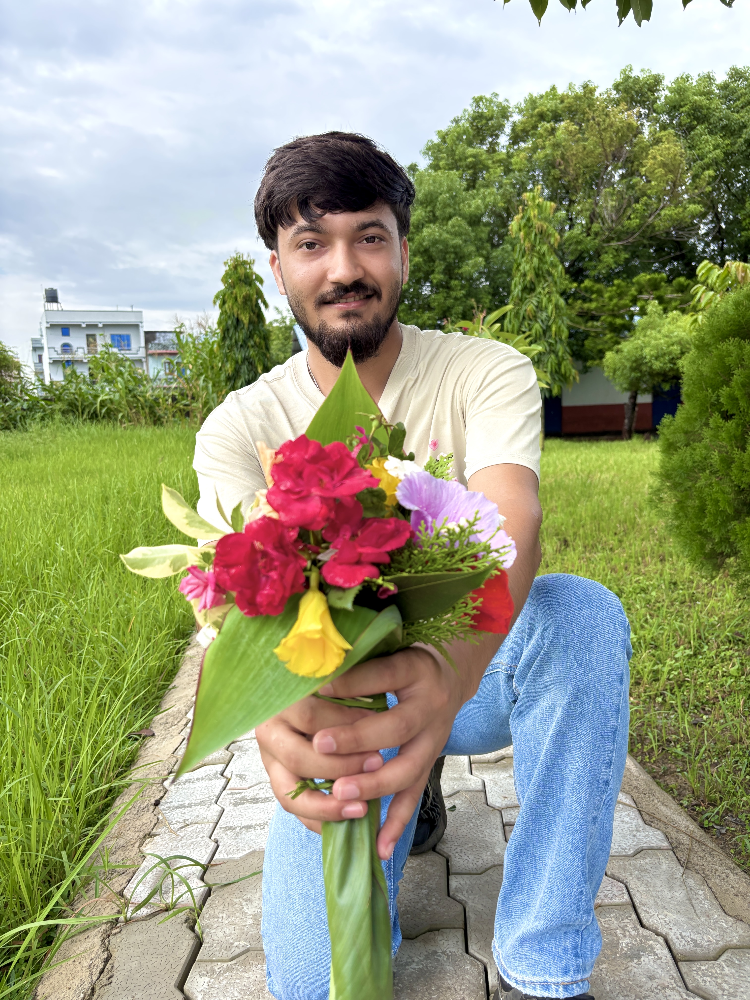

SantoshPoudel
Computer engineer and web developer from Nepal. I build fast websites and AI tools, and share the work on YouTube and GitHub.
Open my main portfolioSantosh Poudel is a developer from Nepal with a diploma in computer engineering. He builds websites and AI detection tools, and he is the founder of VerifiAI.
Who is Santosh Poudel?
Santosh Poudel is an AI developer and the founder of VerifiAI, a platform designed to help individuals and organizations identify AI-generated content, detect manipulated media and verify digital trust.
What does Santosh Poudel work on?
His work includes AI content detection, image verification, developer tools and digital platforms that make online content safer and easier to understand for creators, educators, journalists and businesses.
Making it easier to tell human work from AI-made content.
Santosh Poudel works at the meeting point of technology, content authenticity and user safety. Through VerifiAI he builds tools that help people detect AI-generated text, images and other synthetic content.
VerifiAI was created for the growing need for trustworthy AI detection and media verification. The goal is practical tools that show whether content is human-made or AI-generated, especially as AI media becomes more common.




Main portfolio
Case studies, skills and contact details at santoshpoudel06.com.np.
↗ CodeGitHub projects
Web experiments and open source work under @iamsantoshpoudel.
↗ VideoYouTube channel
Videos and tutorials on the @dexgamex1 channel.
↗VerifiAI
An AI content detector for creators, teachers and businesses.
What is VerifiAI and why I built it
VerifiAI is a platform that helps people identify AI-generated content, detect manipulated media and verify digital trust.
I built it for creators, educators, journalists and businesses who need a quick way to check what they are reading or sharing.
How to check if text or an image is AI-generated
Look at the source first, then run the content through a detector. Treat the result as a signal and not as proof.
For images, also check for odd details such as warped hands, unreadable text and inconsistent lighting.
Web design tips for beginners in Nepal
Start with semantic HTML, make every page mobile friendly and compress your images. A fast, clear site beats a flashy slow one.
Then add small touches such as hover effects and scroll animations that help people understand the page.
Why AI content detection matters
AI can write essays and make photos in seconds. Readers, teachers and editors need ways to check what they are looking at.
Detection tools give a signal, not a verdict, so combine them with human judgement.
Starting with a computer engineering diploma
A diploma in computer engineering in Nepal mixes theory with hands-on labs covering programming, electronics, networks and databases.
The best learning came from building small projects alongside classes.